ПЕРЕДНЕЕ СИДЕНЬЕ В СБОРЕ (для сидений с функцией облегчения посадки "Walk In") > РАЗБОРКА |
| 1. СНИМИТЕ РУЧКУ ОТПУСКАНИЯ ПРАВОГО РЕГУЛЯТОРА НАКЛОНА |
| 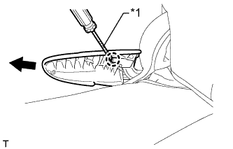 |
Поднимите ручку отпускания регулятора угла наклона, чтобы открыть захват. С помощью отвертки освободите захват и снимите ручку.
| *1 | Защитная клейкая лента |
| 2. СНИМИТЕ ЗАЩИТНЫЙ ЩИТОК ПОДУШКИ ПРАВОГО ПЕРЕДНЕГО СИДЕНЬЯ |
| 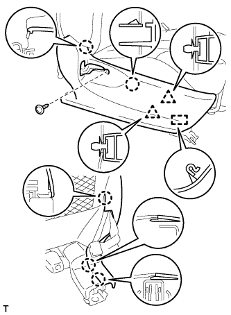 |
Выверните винт.
С помощью съемника молдингов расцепите 5 захвата и 2 фиксатора.
Освободите зажим троса и снимите защитный щиток подушки.
| 3. СНИМИТЕ ВНУТРЕННИЙ ЗАЩИТНЫЙ ЩИТОК ПОДУШКИ ПРАВОГО ПЕРЕДНЕГО СИДЕНЬЯ |
| 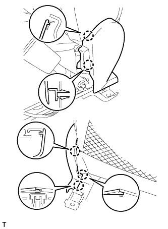 |
С помощью съемника молдингов освободите 5 захвата и снимите защитный щиток подушки.
| 4. СНИМИТЕ ЗАМОК РЕМНЯ БЕЗОПАСНОСТИ ПРАВОГО ПЕРЕДНЕГО СИДЕНЬЯ В СБОРЕ |
Со стороны водителя:
Отсоедините разъем и освободите 4 зажима.
Со стороны переднего пассажира:
Отсоедините 2 разъема и освободите 3 зажима.
| 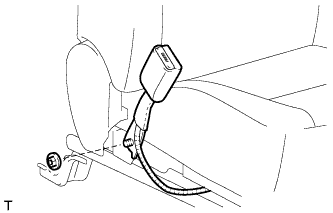 |
Отверните гайку и снимите замок ремня безопасности переднего сиденья.
| 5. СНИМИТЕ СПИНКУ ПЕРЕДНЕГО РАЗДЕЛЬНОГО СИДЕНЬЯ В СБОРЕ |
 |
Снимите резиновую ленту с пружины подушки сиденья.
| 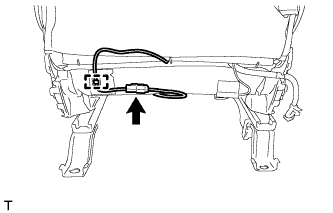 |
Для моделей с системой подогрева сидений:
Отсоедините разъем подогревателя сиденья и освободите зажим жгута проводов.
| 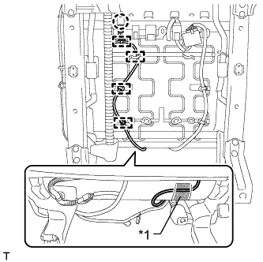 |
Для моделей с боковой подушкой безопасности переднего сиденья:
Освободите захват и отсоедините разъем подушки безопасности.
Освободите 4 зажима жгута проводов подушки безопасности.
Отсоедините крепежную ленту и откройте крышку.
| *1 | Крепежная лента |
Отсоедините жгут проводов подушки безопасности.
| 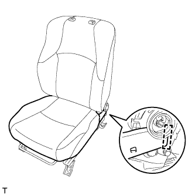 |
Отсоедините крюк.
| 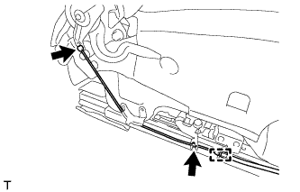 |
Освободите зажим троса и отсоедините трос от спинки сиденья.
| 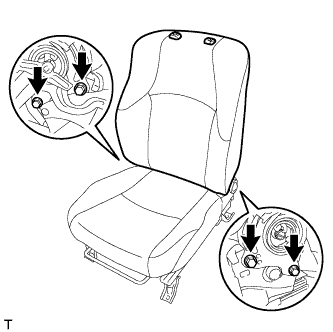 |
Выверните 4 болта и снимите спинку сиденья в сборе.
| 6. СНИМИТЕ КОЛПАЧОК |
| 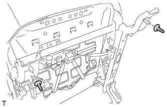 |
Снимите 2 колпачка.
| 7. СНИМИТЕ ОБИВКУ ПОДУШКИ СИДЕНЬЯ ВМЕСТЕ С ПОДУШКОЙ |
| 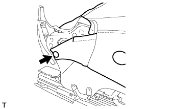 |
С помощью съемника фиксаторов освободите фиксатор.
| 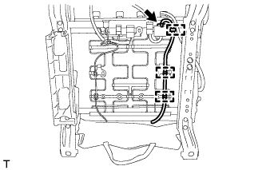 |
Для моделей с системой подогрева сидений:
Отсоедините разъем подогревателя сиденья и открепите 3 зажима жгута проводов.
Отсоедините крепления.
 |
Освободите захват и отсоедините разъем.
Снимите обивку подушки сиденья вместе с подушкой.
| 8. СНИМИТЕ ОБИВКУ ПОДУШКИ РАЗДЕЛЬНОГО ПЕРЕДНЕГО СИДЕНЬЯ |
| 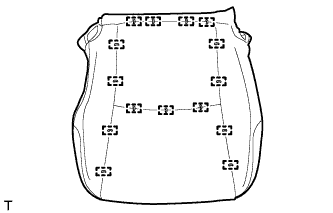 |
Снимите витковые пружины и обивку подушки сиденья с подушки сиденья.
| 9. СНИМИТЕ ПОДОГРЕВАТЕЛЬ ПОДУШКИ ПРАВОГО ПЕРЕДНЕГО СИДЕНЬЯ В СБОРЕ (для моделей с системой подогрева сидений) |
| 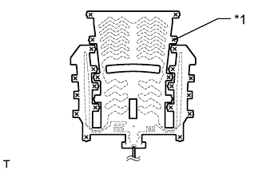 |
Срежьте закрепки и снимите подогреватель подушки переднего сиденья с обивки подушки переднего сиденья.
| *1 | Стяжка |
| 10. СНИМИТЕ КРАЕВОЕ УКРЕПЛЕНИЕ ПОДУШКИ ЛЕВОГО ПЕРЕДНЕГО СИДЕНЬЯ |
| 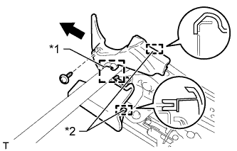 |
Выверните винт.
Переместите защитный элемент в направлении, указанном на рисунке стрелкой, чтобы освободить крепление и 2 направляющих, и снимите защитный элемент.
| *1 | Крюк |
| *2 | Направляющая |
| 11. СНИМИТЕ КРАЕВОЕ УКРЕПЛЕНИЕ ПОДУШКИ ПРАВОГО ПЕРЕДНЕГО СИДЕНЬЯ |
| 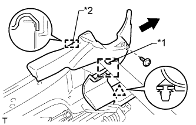 |
Выверните винт.
С помощью съемника фиксаторов расцепите фиксатор.
Переместите защитный элемент в направлении, указанном на рисунке стрелкой, чтобы освободить крепление и направляющую, и снимите защитный элемент.
| *1 | Крюк |
| *2 | Направляющая |
| 12. СНИМИТЕ БЛОК УПРАВЛЕНИЯ ПОДОГРЕВАТЕЛЕМ ПРАВОГО СИДЕНЬЯ В СБОРЕ (для моделей с системой подогрева сидений) |
 |
Отсоедините разъем.
Освободите 2 зажима и снимите блок управления подогревателем сиденья.
| 13. СНИМИТЕ ЖГУТ ЭЛЕКТРОПРОВОДКИ ПРАВОГО ПЕРЕДНЕГО СИДЕНЬЯ |
Снимите жгут проводов сиденья.
| 14. СНИМИТЕ ЛЕВУЮ ВНУТРЕННЮЮ КРЫШКУ РЕГУЛЯТОРА НАКЛОНА |
| 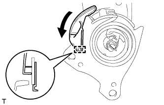 |
Отсоедините направляющую.
Переместите накладку в направлении, указанном на рисунке стрелкой, чтобы снять ее.
| 15. СНИМИТЕ ПРАВУЮ ВНУТРЕННЮЮ КРЫШКУ РЕГУЛЯТОРА НАКЛОНА |
| 16. СНИМИТЕ ОБИВКУ СПИНКИ РАЗДЕЛЬНОГО ПЕРЕДНЕГО СИДЕНЬЯ |
| 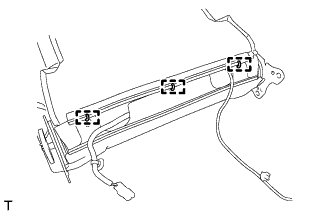 |
Снимите 3 витковые пружины.
Откройте 2 крепления, а затем откройте обивку спинки сиденья.

| *A | для сиденья с тканевой обивкой | *B | для сиденья с кожаной обивкой |
| 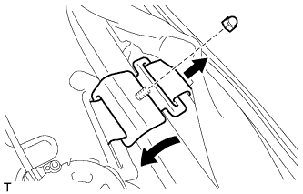 |
Для моделей с боковой подушкой безопасности переднего сиденья:
Отверните гайку и снимите держатель обивки спинки сиденья с рамы сиденья.
Отсоедините держатель обивки спинки сиденья от подушки спинки сиденья.
| 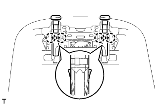 |
С помощью отвертки отцепите 4 захвата и снимите 2 держателя подголовника.
Снимите витковые пружины и обивку спинки сиденья.

| *A | для типа A | *B | для типа B |
| 17. СНИМИТЕ ПОДОГРЕВАТЕЛЬ СПИНКИ ПРАВОГО ПЕРЕДНЕГО СИДЕНЬЯ В СБОРЕ (для моделей с системой подогрева сидений) |
 |
Срежьте закрепки, крепящие подогреватель спинки сиденья к обивке спинки сиденья, а затем снимите подогреватель спинки сиденья с обивки спинки сиденья.
| *1 | Стяжка |
| 18. СНИМИТЕ ПОДУШКУ СПИНКИ ПЕРЕДНЕГО РАЗДЕЛЬНОГО СИДЕНЬЯ |
Снимите подушку спинки сиденья.
| 19. СНИМИТЕ ОБИВКУ ПОДУШКИ ПРАВОГО ПЕРЕДНЕГО СИДЕНЬЯ |
 |
Выверните винт и снимите накладку.
| 20. СНИМИТЕ ПРАВЫЙ НИЖНИЙ ЗАЩИТНЫЙ ЩИТОК ПОДУШКИ ПЕРЕДНЕГО СИДЕНЬЯ |
| 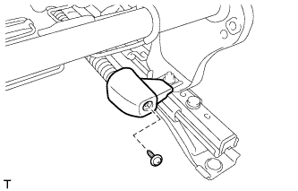 |
Выверните винт и снимите защитный щиток подушки сиденья.